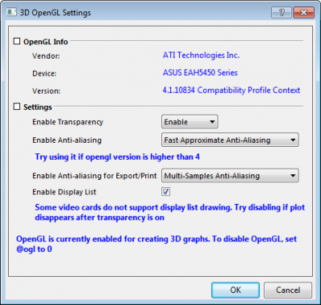
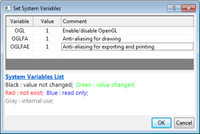

FAQ-918 Welche Anforderungen und Einschränkungen haben 3D-OpenGL-Diagramme?
Letztes Update: 22.08.2022
OpenGL-3D-Requirements
Alle 3D-Diagramme, 3D-Funktionsdiagramme und parametrische 3D-Funktionsdiagramme werden ab Origin 9.0 standardmäßig mit OpenGL erstellt. Dies ermöglicht eine sehr größeren Leistungsumfang, wie schnelleres Zeichnen, schnelles Drehen, Beleuchtungseffekte der Oberfläche und die Einführung von einigen neuen Diagrammtypen.
Anforderungen von 3D-OpenGL
Die grafische Darstellung mit OpenGL hängt von der Hardwarekonfiguration des Computers ab. Für das beste Ergebnis empfehlen wir:
-
- eine dezidierte Grafikkarte wie ATI Raedon™; Series 5400 oder höher oder auch NVIDIA GeForce® 8400 oder höher
- integrierte Grafikhardware wie Intel® HD 3000 oder höher
- Für Mac: Virtualisierungssoftware: Parallels® 8.0 oder höher
Wichtige Hinweise
- Wir empfehlen außerdem, dass Sie die neueste Version Ihres Grafiktreibers verwenden, um sicher zu stellen, dass Sie Zugriff auf die neueste, von Ihrer Hardware unterstützte OpenGL-Version haben. Dieses Update kann sowohl für dezidierte Karten als auch für integrierte Karten durchgeführt werden.
- Wenn Ihr PC über zwei Grafikkarten verfügt, stellen Sie sicher, dass Sie die bessere verwenden, z. B. statt der integrierten die dedizierte Grafikkarte.
- Legen Sie die höhere Leistung für die Origin-Software in der Windows-Einstellung fest, um die beste Leistung von OpenGL sicherzustellen. Ausführlich beschriebene Schritte finden Sie auf dieser Seite.
Falls Anforderungen nicht erfüllt werden
Sollte Ihre Hardwarekonfiguration nicht den empfohlenen Optionen entsprechen, haben Sie zwei Möglichkeiten:
Dialog 3D-OpenGL-Einstellungen zum Anpassen der Einstellung für OpenGL
Sie können das Menü Einstellungen: 3D-OpenGL-Einstellungen verwenden, um einen Dialog zum Anpassen der OpenGL-Einstellungen zu öffnen. Dieser Dialog enthält Optionen zum Ausschalten bestimmter OpenGL-Einstellungen wie Transparenz und Anti-Aliasing (Kantenglättung). Dies kann helfen, mögliche Probleme zu vermeiden.
- 
OpenGL deaktivieren
Sie können den Dialog Einstellungen: Systemvariablen verwenden und ogl=0 eingeben, um OpenGL zu deaktivieren. Alle 3D-Diagramme verwenden dann den Nicht-OpenGL-Zeichnungscode, der in den Vorgängerversionen von Origin Anwendung findet.
- 
 |
Einige nützliche Befehle:
- Um festzustellen, ob ein 3D-Diagramm OpenGL-basiert ist oder nicht:
- Führen Sie bei aktivem Diagrammfenster layer.IS3DGL= aus. Wenn eine 1 ausgegeben wird, basiert es auf OpenGL. Wenn eine 0 ausgegeben wird, wurde es auf die ältere Weise erstellt (GDI-basiert).
- Um ein GDI-basiertes 3D-Diagramm in ein OpenGL-Diagramm zu konvertieren:
- layer -3d c;//convert the current layer to OpenGL
- win -dg; //Duplicate and convert the current graph window to OpenGL
Beispiel 1:
Dies ist ein Beispiel, um alle GDI-basierten 3D-Diagramme in einem Origin-Projekt, die mit einer der älteren Versionen erzeugt wurden, in OpenGL zu konvertieren. Das Gleiche gilt, wenn die Systemvariable @ogl = 1 ist.
doc -e LP //execute for all graph windows { layer -3d c;//convert the current layer to OpenGL }
Beispiel 2:
Dies ist ein Beispiel, um alle Diagrammfenster, die nicht auf OpenGL basieren, im aktuellen Ordner des Projekt Explorers zu duplizieren und in OpenGL umzuwandeln:
doc -ef P //Execute for the given script for all graph objects in the current folder { if(!layer.IS3DGL) // layer.is3dgl is used to determine whether current graph is 3d opengl graph { win -dg; //Duplicate and convert the current graph window to OpenGL } }
|
Schlüsselwörter:OpenGL